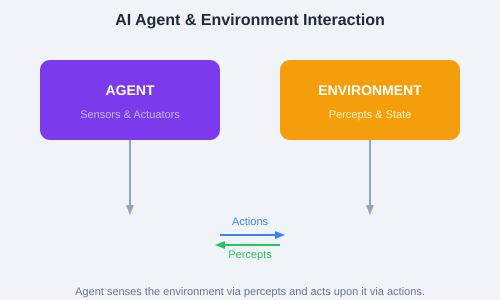

Agents & Environments
An agent is anything that perceives its environment through sensors and acts upon that environment through actuators. This is a core concept in AI — all AI systems can be viewed as agents interacting with environments.

Figure: The agent-environment loop — agents perceive, reason, and act.
PEAS describes the design of an intelligent agent:
Example for a self-driving car: Performance = safety, speed, comfort; Environment = roads, traffic, weather; Actuators = steering, brakes, accelerator; Sensors = cameras, lidar, GPS.
| Type | Description | Example |
|---|---|---|
| Fully Observable | Agent sees complete state | Chess board |
| Partially Observable | Agent sees partial state | Poker (hidden cards) |
| Deterministic | Next state fully determined by action | Maze |
| Stochastic | Uncertainty in state transitions | Dice game |
| Episodic | Each action is independent | Image classification |
| Sequential | Current action affects future | Chess |
| Static | World doesn't change while agent thinks | Sudoku |
| Dynamic | World changes in real-time | Self-driving |